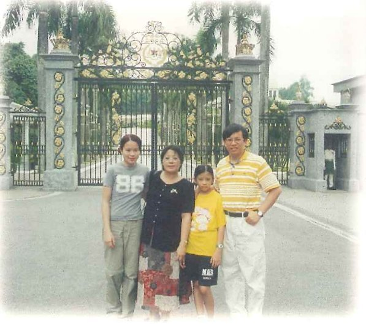

What began as one man's calling became a family's whole life. For sixty years — a founder, his daughters, and now a new generation — the same family has given itself to a school in a rice field.
The father who buried his treasure in a field
Chen Yao-huo studied in Japan as a young man, inspired by the headmaster of his own school. At forty-five he chose the remotest township in the county and gave everything to build it. His daughter Chen Chun-wan once could not help asking him why — why this poorest place, why give up an official career, why bind his children to labor here, with no right to choose their own lives. His answer was simple.
"Because of my Japanese teacher's influence — and because the government had not chosen Kanding, so I chose Kanding. I only wished to help people."「日本の恩師の影響です。そして、政府が崁頂を選ばなかったから、私が崁頂を選んだ。ただ、人を助けたかっただけなのです。」
Daughters who could not refuse
At her father's wish, Chen Chun-wan came home to teach in 1976. She led rural children to regional dance honors seven years running, and served twenty-eight years as the school's academic dean before stepping in as acting principal; since 2006 she has been its chairperson. Her students called her "Nan Jung's savior." Her younger sister, Chen Chun-shih, joined in 1982, became the school's second principal in 1991, and today serves as executive director — earning a doctorate along the way. Asked whether she had hesitated to take the helm, she answered at once: "Essentially no. A father's wish cannot be defied, and I felt how heavy his burden was."

Recording a father's voice
When the family set out to write the school's story, they felt one thing was missing — the founder's own words. Ten days after the interviews, a memorial volume arrived from Toyokuni Gakuen in Japan, carrying an account the founder had written himself, in Japanese, at the age of eighty. "As if by providence," it had come just in time. The daughters translated it in full — turning their father's shy, plain-spoken reticence into a lasting legacy.
"Though I founded Nan Jung, its survival rests not on me alone. If there is a worthy soul who understands and can carry on my philosophy, he need not even be of my blood."「南榮は私が創立したが、その存続と発展は、私一人によるのではない。私の教育哲学を理解し受け継ぐ賢者があれば、血のつながりなど無くてもよいのだ。」
From principal to chairperson
Today the mission lives on. Chairperson Chen Chun-wan — honored with the nation's highest private-education award, and once received by the President himself — championed the building of the English Village. Executive Director Chen Chun-shih added a Japanese Village and a language-certification center, and deepened the school's ties across the world. A new generation of principals has taken up the work, and graduates return to teach where they once studied — two generations, and now a third, walking toward the same goal.
← Back一人の人の使命として始まったものが、やがて一家の生涯そのものになりました。六十年——創立者、その娘たち、そして新しい世代へと、同じ一家が、田園の学校に身を捧げつづけてきたのです。
藏寶於田 — 田に宝を埋めた父
陳耀火は若き日に日本で学び、自らの学校の校長に深く影響を受けました。四十五歳で県内もっとも辺鄙な郷を選び、すべてを注いで学校を建てます。娘の陳純婉は、あるとき父にこう問わずにいられませんでした。なぜ最も貧しいこの土地なのか、なぜ官途を捨てたのか、なぜ子どもたちにも自分の人生を選ぶ自由を与えず、ここで労苦をともにさせるのか、と。父の答えは、ごく素朴なものでした。
— Founder Chen Yao-huo— 創立者 陳耀火
父命難違 — 娘たち
父の願いに応えて、陳純婉は1976年、故郷に戻り教壇に立ちました。農村の子どもたちを率いて、舞踊で七年連続の地区入賞へ導き、二十八年にわたり教務主任を務めたのち、代理校長として学校を支え、2006年からは理事長を務めています。生徒たちは彼女を「南榮の救い主」と呼びました。妹の陳純適は1982年に加わり、1991年に第二代校長となり、いまは執行長を務めます——その道のりで博士号も取得しました。校長就任にためらいはなかったかと問われ、彼女は即座に答えました。「基本的に、ありません。父の願いには背けず、その重荷がどれほどかを、私は感じていましたから。」
父の声を遺す
一家が学校の物語を綴ろうとしたとき、たった一つ、欠けているものがありました。創立者自身の言葉です。聞き取りを終えて十日後、日本の豊国学園から一冊の記念誌が届きました。そこには、創立者が八十歳のときに自ら日本語で綴った自叙がありました。「神の助けのように」、それはまさに間に合ったのです。娘たちはそれを全文訳しました——口下手で控えめだった父の寡黙を、永く遺る記録へと変えて。
— Founder Chen Yao-huo— 創立者 陳耀火
校長から理事長へ — 今に生きる使命
使命は、いまも生きています。理事長・陳純婉は——私学教育における国家最高の栄誉を受け、かつては総統じきじきの接見も受けて——英語村の建設を推し進めました。執行長・陳純適は、日本語村と語学検定センターを設け、世界との絆をさらに深めました。新しい世代の校長たちがその仕事を受け継ぎ、卒業生たちは、かつて学んだ場所へ教師として戻ってきます——二代、そして三代が、同じ目標へと歩みつづけているのです。
← 戻る한 사람의 소명으로 시작된 일이 마침내 한 가족의 생애 전체가 되었습니다. 육십 년 동안—창립자와 그의 딸들, 그리고 이제 새로운 세대에 이르기까지—같은 가족이 논밭 한가운데 세워진 학교에 자신을 바쳐 왔습니다.
논에 보물을 묻은 아버지
천야오훠(陳耀火)는 젊은 시절 일본에서 유학하며, 자신이 다니던 학교 교장 선생님에게 깊은 감화를 받았습니다. 마흔다섯 살에 그는 현 내에서 가장 외진 향(鄕)을 선택해 모든 것을 바쳐 학교를 세웠습니다. 딸 천춘완은 언젠가 아버지에게 묻지 않을 수 없었습니다—왜 하필 가장 가난한 이곳인지, 왜 관직을 포기했는지, 왜 자녀들에게 자신의 삶을 선택할 권리조차 주지 않고 이곳에서 함께 고생하게 했는지를. 아버지의 대답은 소박했습니다.
"일본인 은사의 영향 때문입니다. 그리고 정부가 간딩을 선택하지 않았기에, 제가 간딩을 선택했습니다. 저는 그저 사람들을 돕고 싶었을 뿐입니다."「日本の恩師の影響です。そして、政府が崁頂を選ばなかったから、私が崁頂を選んだ。ただ、人を助けたかっただけなのです。」
거절할 수 없었던 딸들
아버지의 뜻에 따라 천춘완은 1976년 고향으로 돌아와 교단에 섰습니다. 그녀는 농촌 아이들을 이끌어 무용 부문에서 칠 년 연속 지역 대회 입상을 이루었고, 이십팔 년 동안 교무주임을 지낸 뒤 대리 교장으로 학교를 이끌었으며, 2006년부터는 이사장을 맡고 있습니다. 학생들은 그녀를 '난룽의 구원자'라고 불렀습니다. 여동생 천춘스는 1982년에 합류하여 1991년 학교의 제2대 교장이 되었고, 오늘날에는 집행장(執行長)을 맡고 있습니다—그 과정에서 박사 학위도 취득했습니다. 교장직을 맡는 데 망설임이 없었느냐는 질문에 그녀는 즉시 대답했습니다. "거의 없었습니다. 아버지의 뜻은 거스를 수 없었고, 그 짐이 얼마나 무거운지 느끼고 있었으니까요."
아버지의 목소리를 기록하다
가족이 학교의 이야기를 글로 남기기로 했을 때, 한 가지가 빠져 있음을 느꼈습니다—창립자 자신의 말이었습니다. 인터뷰를 마친 지 열흘 뒤, 일본 도요쿠니 학원(豊国学園)에서 기념 문집 한 권이 도착했습니다. 그 안에는 창립자가 여든 살에 직접 일본어로 쓴 자서전이 실려 있었습니다. "마치 하늘의 뜻처럼" 그것은 때마침 도착한 것이었습니다. 딸들은 그 글을 전부 번역했습니다—말수가 적고 소박했던 아버지의 침묵을, 오래도록 남을 유산으로 바꾸어 놓았습니다.
"제가 난룽을 세우기는 했으나, 그 존속과 발전은 저 한 사람에게 달려 있지 않습니다. 저의 교육 철학을 이해하고 이어받을 어진 이가 있다면, 굳이 저와 혈연관계가 없어도 좋습니다."「南榮は私が創立したが、その存続と発展は、私一人によるのではない。私の教育哲学を理解し受け継ぐ賢者があれば、血のつながりなど無くてもよいのだ。」
교장에서 이사장으로
오늘날 그 사명은 여전히 이어지고 있습니다. 천춘완 이사장은—사립 교육 부문 국가 최고 영예를 받았고, 한때 총통의 접견을 받기도 했습니다—영어마을 건립을 주도했습니다. 천춘스 집행장은 일본어마을과 어학 인증 센터를 세워 세계와의 유대를 한층 깊게 했습니다. 새로운 세대의 교장들이 그 일을 이어받았고, 졸업생들은 자신이 배웠던 곳으로 돌아와 교사가 됩니다—이대, 그리고 이제 삼대에 걸쳐, 같은 목표를 향해 함께 걸어가고 있습니다.
← 뒤로